(I)
Product Integrity
Preserve the form, scale, clustered metal details, and reflective finish of every piece.
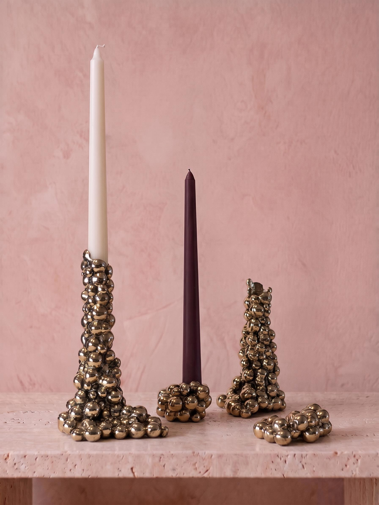
AESA has built a distinctive identity through its sculptural home décor and jewelry collections, alongside an established presence within luxury retail. This project explores how that identity could be translated into a more editorial digital experience for today’s customer.
The objective was to develop a cohesive visual campaign extending across all marketing channels while remaining true to the craftsmanship and character of the brand and its products.
Guided by a consistent visual language and executed with AI-assisted creative production, the project reimagines how the collection could be experienced online while enhancing the overall shopping journey.
The existing product photography clearly documented the form, proportion, and finish of each piece. The opportunity was to build additional visual content around those assets so the collection could tell a broader story across digital marketing channels.
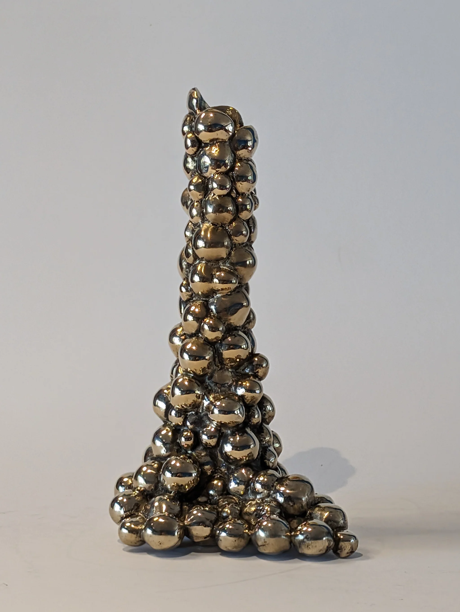
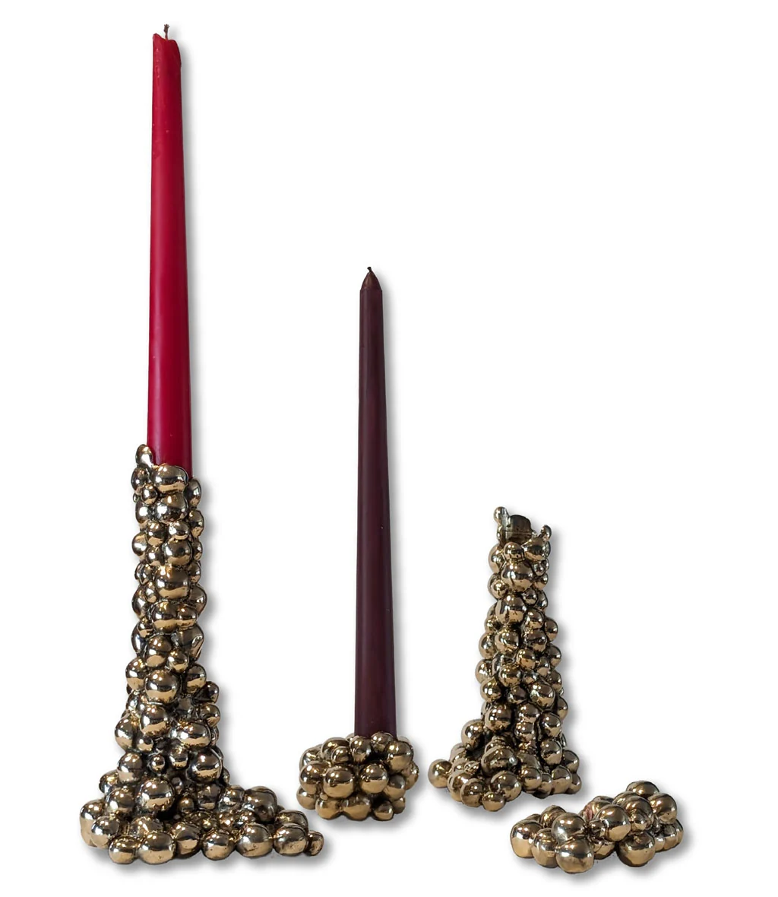
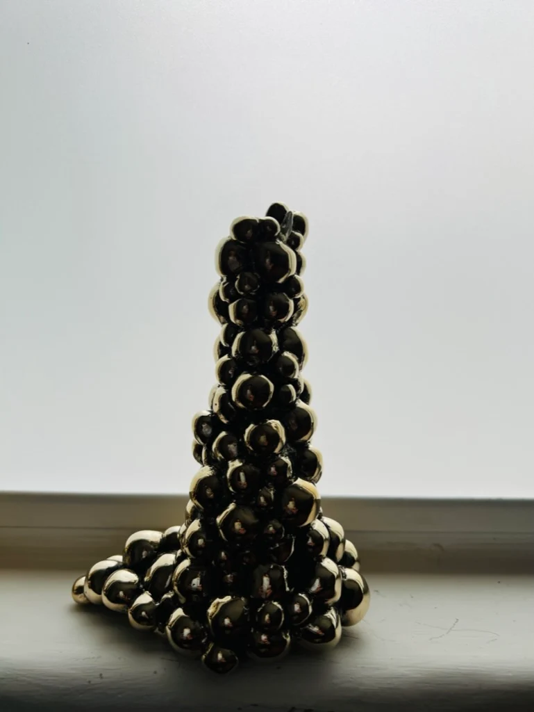
The objective was not to redefine the collection, but to enhance the shopping experience through a more cohesive visual presentation. The products already possessed strong sculptural qualities and premium craftsmanship. The opportunity was to communicate those qualities through a more intentional digital visual system.
Several environments were tested, including darker colors, reflective metallic surfaces, and higher-contrast compositions. While visually striking, these directions often competed with the products or made the presentation feel less authentic.
A soft plaster-pink backdrop emerged as the strongest direction. Its warm undertones complemented the bronze finish, enhanced the richness of the metal, and allowed the reflections and craftsmanship to remain the focus.
The final direction balanced the restraint of museum-style object photography with the familiarity of a domestic surface. The pieces feel considered and collectible while remaining natural enough to imagine on a table in a real living space.
(I)
Preserve the form, scale, clustered metal details, and reflective finish of every piece.
(II)
Use negative space and controlled composition so the product remains the focal point.
(III)
Pair warm bronze with blush plaster and pale stone to emphasize texture and depth.
(IV)
Maintain one visual language across web, email, Pinterest, and social media.
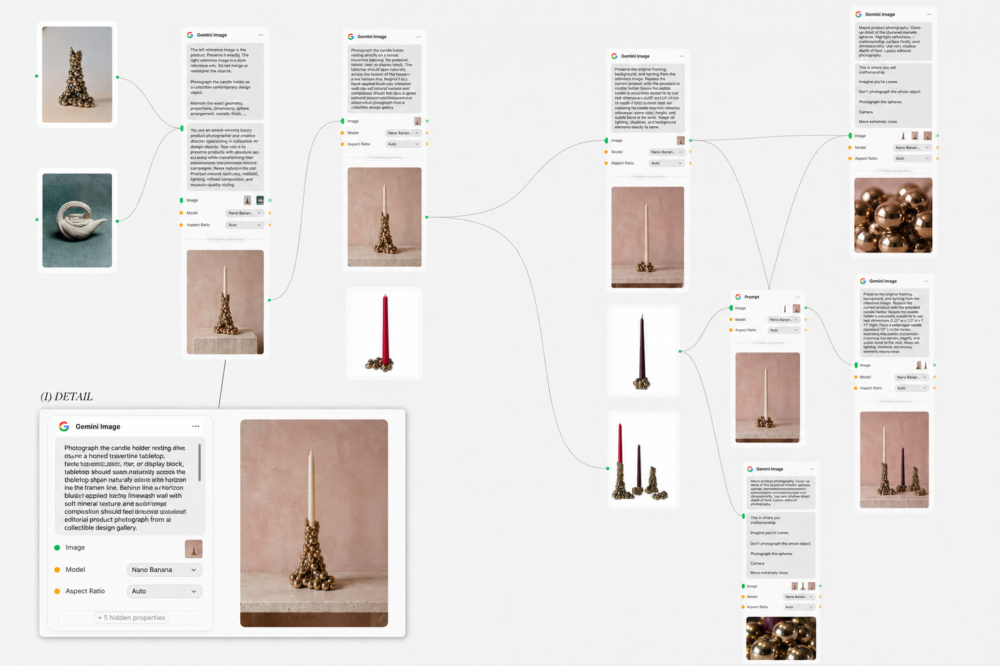
(I)
Collected references and mapped the intended visual language in Figma.
(II)
Defined the palette, lighting, composition, and campaign applications.
(III)
Built prompts that preserved product identity while changing the setting.
(IV)
Rejected inaccurate outputs and refined crop, tone, detail, and consistency.
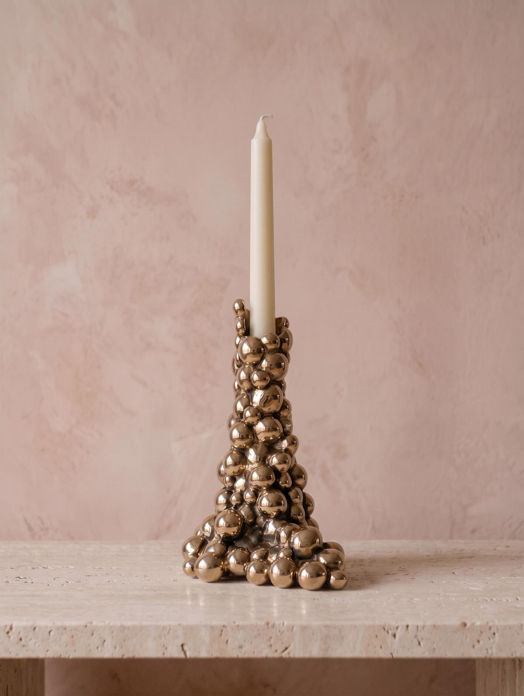
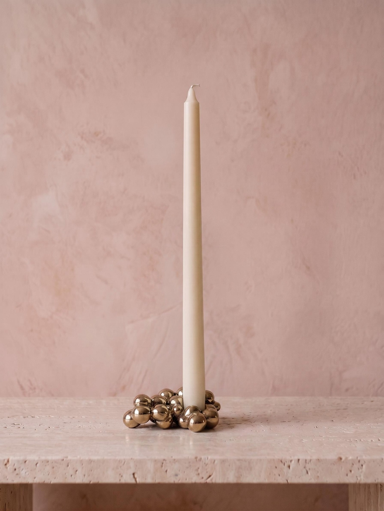
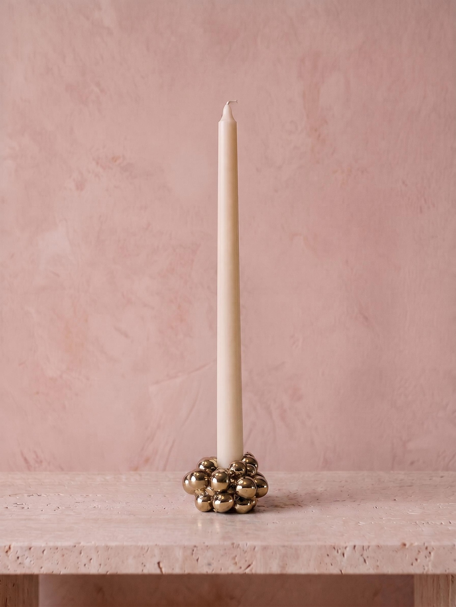
Objective:
Position the Uvas Collection as an editorial lifestyle experience rather than a traditional product launch.
Every touchpoint uses consistent photography, typography, and color to reinforce the collection’s identity.
Channel Strategy:
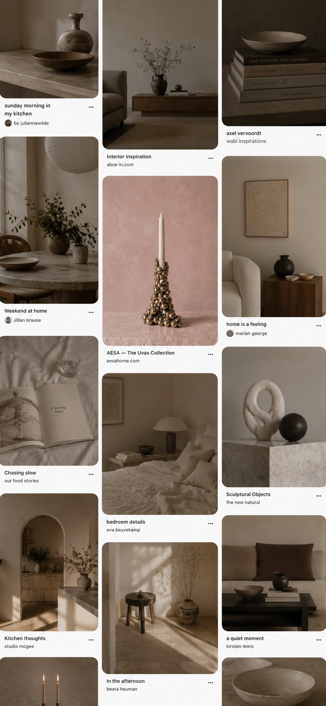
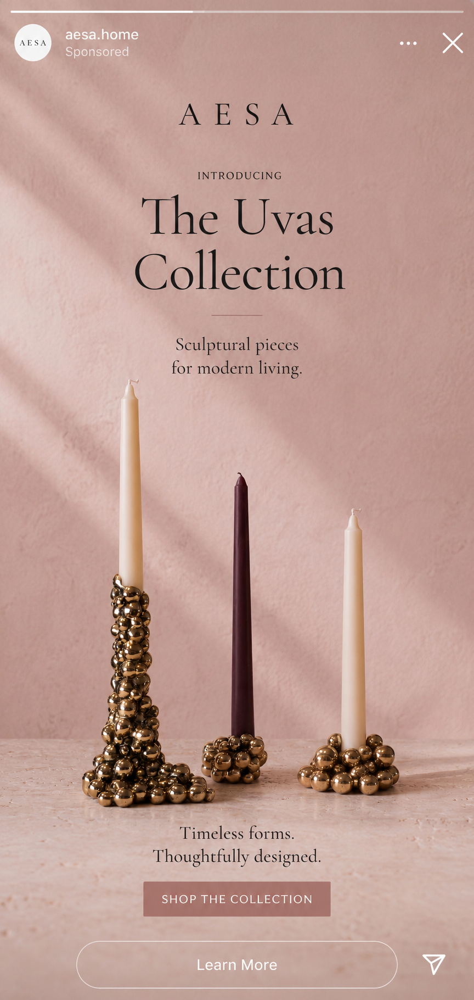
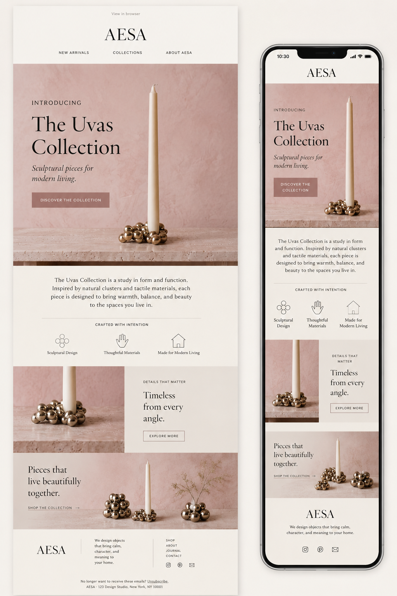
(I)
AI-assisted image production
(II)
Layout, visual direction, and campaign mockups
(III)
Page structure
(IV)
Styling and responsive layout
(V)
Color and tone refinement
(VI)
Image editing and cleanup
This project demonstrates how a clear creative direction can be extended through AI-assisted execution into a cohesive digital marketing campaign while preserving the character of the original products.
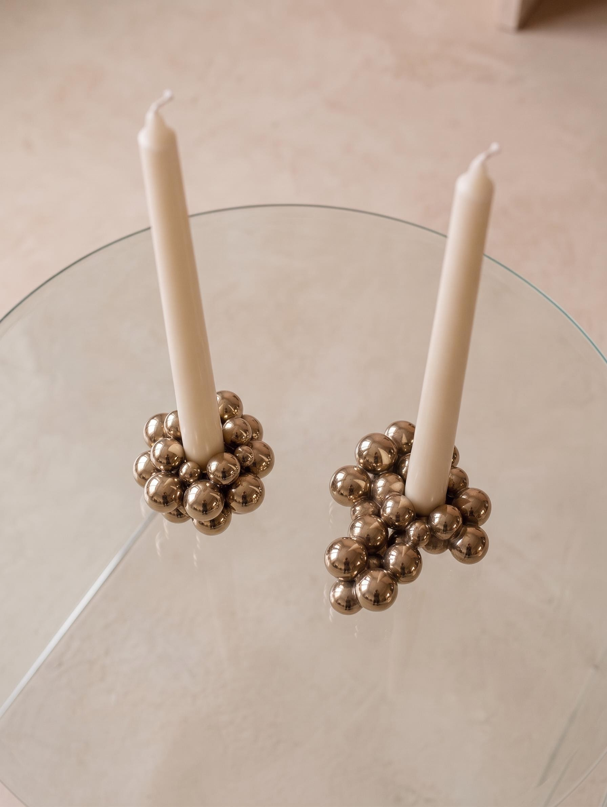